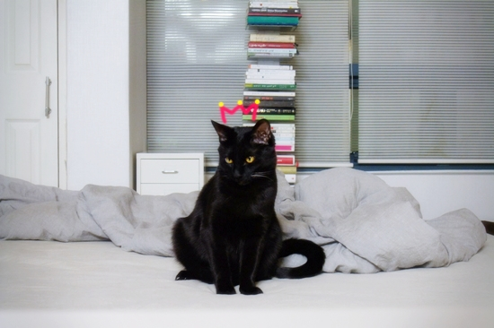
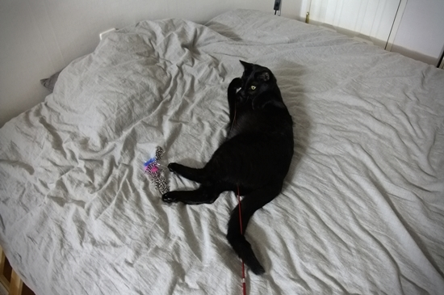

2010-06-04 22:15:25 1살 나이먹는 거 싫은데...간장이 나한테 온 게 작년 9월 4일, 이 때가 생후 3개월 정도 됐을 때니까 2010년 6월 4일, 오늘이 간장의 첫번째 생일인 셈이다. 고양이 나이 1살을 사람 나이로 치면 15살이라는데,이제 애기짓 그만하고 사려깊은 고양이가 되려나?에고, 개구장이라도 좋으니 건강하게만 자라다오~.예썰~!